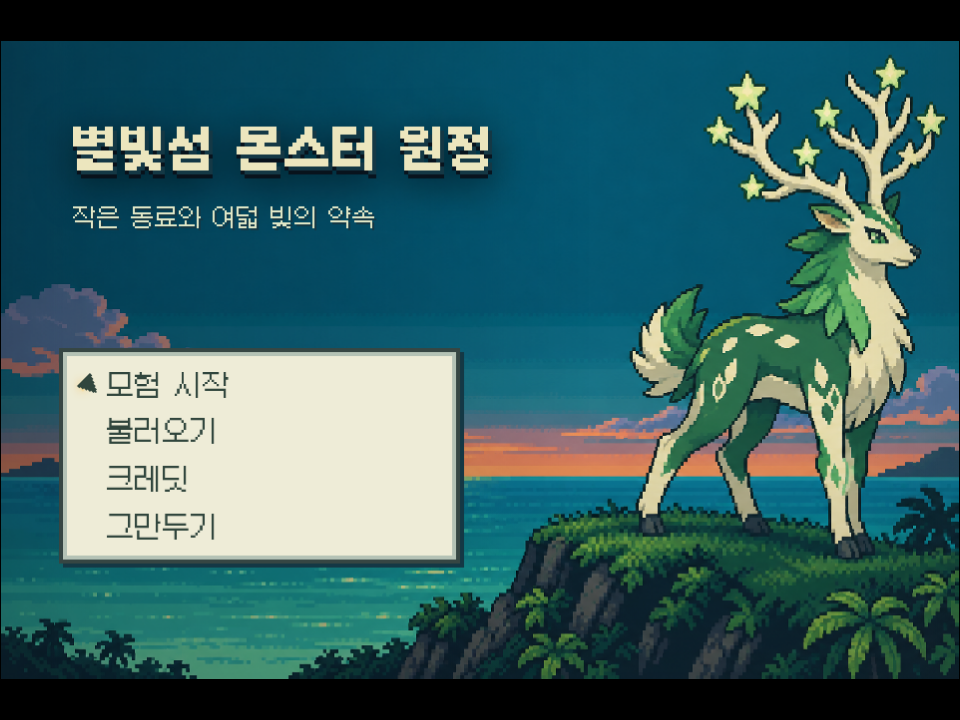
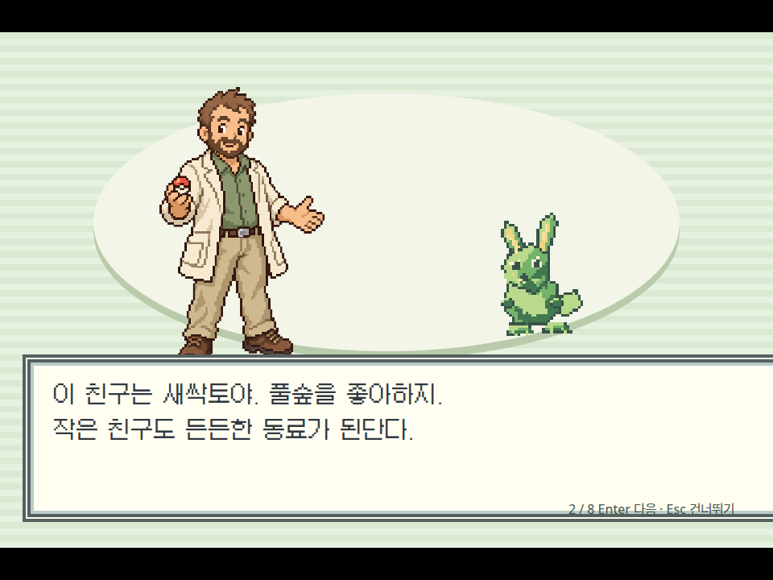
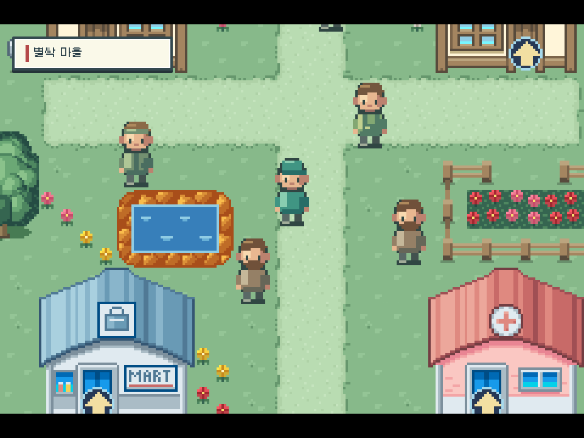
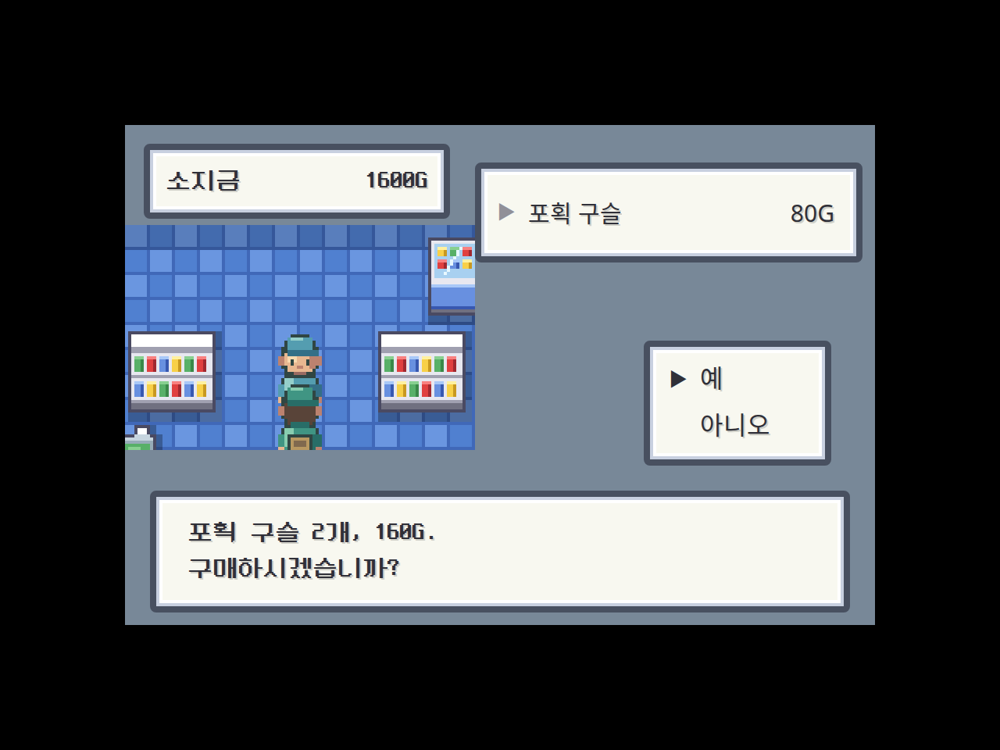
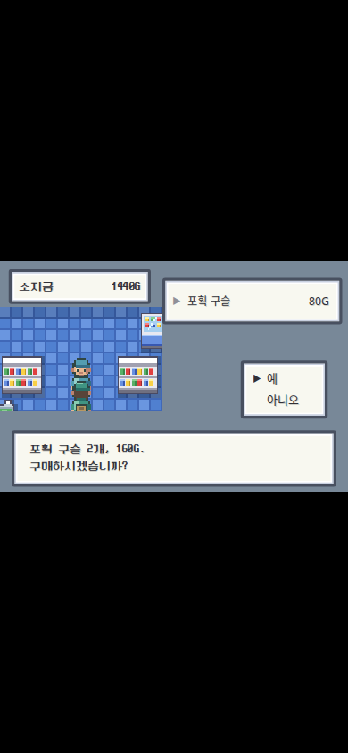
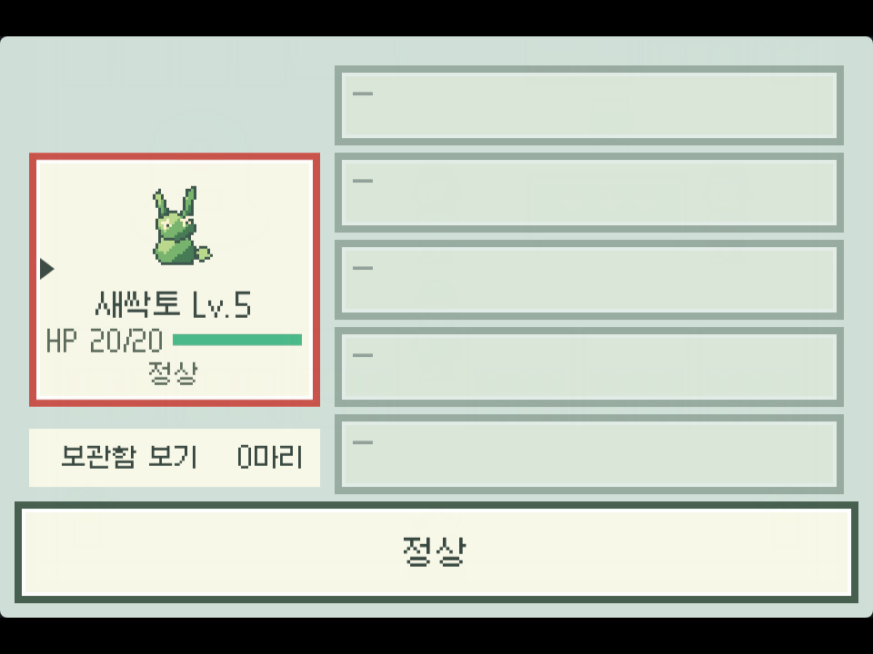
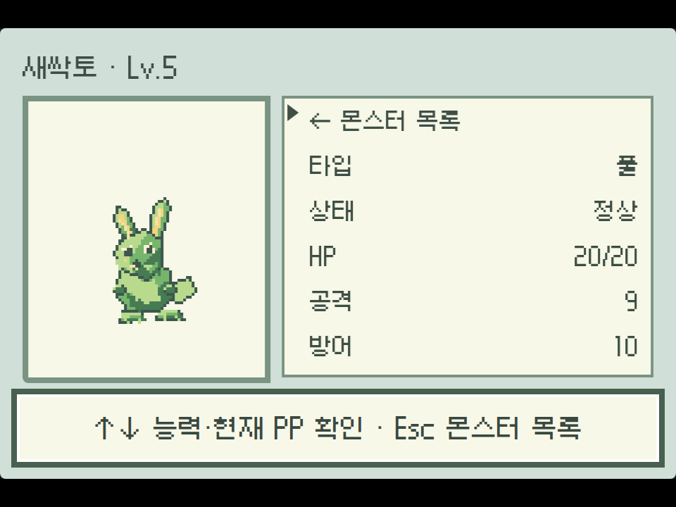
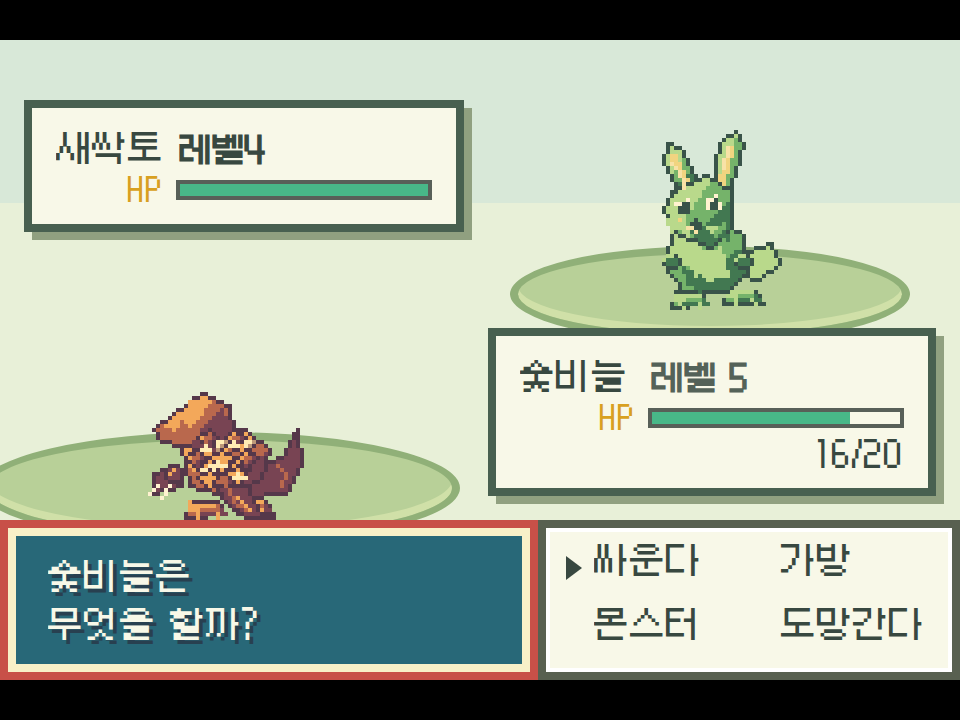
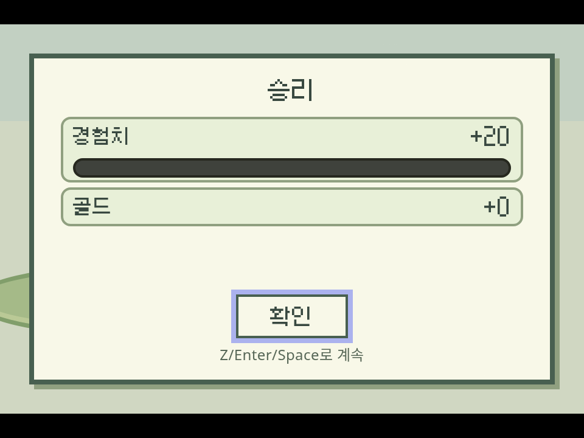

에메랄드 기준 조수·게임 개선
게임 제작 기준과 조수 도구를 함께 묶었습니다. 기존 72개 맵·60종 데이터는 보존하고 타일·인물·몬스터·오프닝·메뉴·상점·전투 화면을 공통 기준으로 정리했습니다.
새 게임의 소개는 Enter로 한 페이지씩 진행합니다. 기존 저장은 ‘불러오기’로 이어집니다. 실제 상점 구매·취소와 전투·포획·회복·배지 이벤트를 확인했습니다.
아래 화면은 실제 플레이어 캡처입니다. 에메랄드 참고의 자체 그림과 기존 gen1 전투 규칙을 사용합니다. 72개 맵 전체 무보조 클리어를 검증한 결과는 아닙니다.









검증·정본 저장 보고서 전문
# 에메랄드 기준 조수·게임 개선 — 2026-10-04 ## 선택한 기준 별빛섬은 섬·해안·숲·산을 연결하는 모험이므로 에메랄드를 공통 참고로 선택했다. 타일, 사람과 몬스터 그림, 오프닝, 대화, ESC 메뉴, 동료·가방, 상점, 전투 화면을 동일한 버전의 크기·배치 규칙으로 묶는다. 단순히 녹색 테마를 설정하는 작업으로 전체 게임 제작을 완료 처리하지 않는다. 에메랄드 원작을 그대로 재구현했다는 보고는 아니다. 그림은 자체 자산이고, 현재 전투 규칙은 기존 `gen1`이다. 특성·날씨·더블배틀 등 에메랄드의 모든 전투 규칙을 구현했다고 주장하지 않는다. 기존 공용 전체 캠페인과 음악을 재사용했으며, 매 요청마다 새로운 세계와 OST를 처음부터 창작한 것도 아니다. ## 조수가 다음 프로젝트에도 할 수 있는 일 - 일반 문장으로 포켓몬형 전체 게임 제작을 요청하면 전체 제작 도구로 연결한다. - 빈 프로젝트에는 공용 72맵·60종·8배지·스토리·리그·엔딩·후일담을 생성한다. - 기존 게임 보수는 맵 래스터·이벤트·연결·충돌·시작·세션·몬스터 데이터를 보존한다. - `configure_monster_style`, `build_monster_game`, `read_monster_game`, `review_monster_game`과 시스템·오프닝 검토 도구를 함께 제공한다. - 설정만 바꾸거나 완료 문장만 작성한 결과는 제작 성공으로 인정하지 않는다. - 공용 타일 정의·참고문서, 교수·타이틀·인물·몬스터 그림을 다음 프로젝트에도 배포한다. - 전체 생성의 변경 영수증은 적용 후 실제로 존재하는 맵을 가리킨다. ## 실제 모델 실행과 클라이언트 적용 실제 모델에게 빈 프로젝트에서 에메랄드 느낌의 전체 게임을 만들도록 요청했다. 147.099초, 15턴, 도구 호출44회와 복구된 도구 오류4회가 기록됐다. 결과는72맵·60종·8배지·12목표·279이동 연결·94트레이너전·9상점이다. 구조·시스템 완료 검사 문제는0개였다. 이 검사 자체의 `playbackVerified`는 false이며, 실제 플레이와 저장 증거는 별도 절에 기록한다. 실제 최종 결과를 재구성한 NDJSON 봉투로 브라우저의 평문 분류→Pi 명령→ 클라이언트→체크포인트→store 적용 경로에 재생했다. 최종 적용과 체크포인트 양쪽에서72맵/60종을 유지했고, 생략된 자산·DB·타일셋 복원과 오래된 기준본 거절을 확인했다. 교수·스타터4개 그림은 실제 PNG로 왕복했다. 원본 체크포인트 타이밍 또는 두 번째 실시간 모델 호출, 전체 네이티브 조수 패널을 검증한 것으로 보고하지 않는다. 적용 재생의 page error와 network failure는0개다. ## SQLite 정본 저장·재로드 실행 중인 호스트의 공식 API로 백업→에셋 저장→기준 SHA 비교 저장→새 연결로 다시 열기·로드를 수행했다. 실행 중인 SQLite를 직접 수정하지 않았다. | 대상 | project id | 호스트 프로젝트 | revision | 저장 후 확인 | |---|---|---|---:|---| | 기존 별빛섬 | fca4b134-ed34-4365-9021-450c7ee24894 | 649482df-81ca-4af9-806b-2613f7d7bebb | 26 | 문서 동일, 에셋184개 바이트 동일 | | 실제 AI 생성 결과 | 9b959aab-eb4b-41ea-8bc3-abe9efd5fd83 | 91847c9d-1703-433e-bbde-40ad84c76685 | 2 | 문서 동일, 에셋621개 바이트 동일 | 저장 폴더는 `/home/main/.local/share/oprn/web-workspace/.oprn-projects/<호스트 프로젝트>/project.sqlite` 와 같은 폴더의 `assets/`다. 두 영수증의 SHA와 mediaByteReloads를 함께 보관했다. 기존 저장 후 SHA는 `c730456f589c4ffa0e0f6d0775eef651384be06d5d292ad37190c5a1f360072f`다. 기존 맵·이벤트·경로·타일 통행/우선순위/지형·슬라이드 표·시작·세션을 그대로 유지했다. ## 화면과 실제 플레이 확인 | 항목 | 확인한 결과 | 범위 | |---|---|---| | 오프닝 | 기존8페이지/신규6페이지, Enter당 한 페이지, WASD로 BGM 재시작 없음 | 최종 컴파일 플레이어, 새 게임 | | 기존 저장 | 위치·돈·동료·박스·레벨·HP·기술·PP 유지, 오프닝 재생 없음 | 실제 이전 슬롯을 격리 브라우저에 그대로 복사 | | 동료 |32px 아이콘 정상, 독립 요약창 제목 표시 | 최종 컴파일 플레이어 | | 상점 | 구매2개1600→1440G, 구슬10→12, No/Escape/Quit 상태 유지 | 실제 Continue/문/카운터, 마을 진입 위치만 QA 이동 | | 좁은 상점 |390px에서도 확인 상품 한 행 전체·Yes 포커스·실제 필드 한 개 표시 | 최종 컴파일 플레이어 | | 최종 배틀 |64px 원본을128px로 표시, 정적 그림 소수 배율 제거, 보상창 전체 표시 | 자연 획득한 동료 상태 재생 후 원래 야생전 실행 | | 스타터·야생·포획 | 자연 이동으로 실제 조우, 기술 PP30→29, 두 번째 구슬 포획 성공 | 이전V2 컴파일 플레이어의 실제 플레이 | | 회복·첫 배지 | 실제 간호사·장치·관장전·승리 이벤트로 회복/EXP/배지/보상 적용 | V2, 센터·장치·관장 위치는 QA 이동 | | 진화·기술 습득 | 실제 승리 EXP로16레벨 진화, 네이티브 기술 교체 | V2, 시작15레벨/EXP1870은 QA 준비 | | 슬라이드 | 입력을 놓아도 얼음/화살표 이동, 벽/정지 타일에서 멈춤 | 최종 공개 컴파일 플레이어,3개 원래 저작 구간, 시작 위치만 QA 이동 | V2의 아이콘 누락·적110px/호흡 배율·보상창 잘림·요약 제목 이동을 발견해 수정했다. 최종 파일에서60개 아이콘,128px 적, 전체 보상창·요약 제목을 확인했다. 기본 전투/설원 배경의 암묵적 의존성도 내보내기에 포함했다. 최종 상점과 배틀의 page error/HTTP error는0개다. 72개 맵 전체의 연결·레이어 길이·타일셋·이벤트 좌표/대상 구조 검사에는 문제가 없었다. 이것을72개 맵 전 구간의 실제 통행 검증이나 끝까지 무보조 클리어로 보고하지 않는다. 원래 자연 플레이는 새 브라우저에서 다시 연 뒤 기록된 자연 상태를 재생한 구간과 구분했으며, V2 Chromium target crash1회도 보관된 요약에 명시했다. ## 바로 볼 화면 - `opening-final-existing/01-title.png` - `opening-final-existing/intro-2.png` - `opening-final-existing/08-first-field.png` - `shop-final-compiled/02-desktop-buy-confirmation.png` - `shop-final-compiled/05-narrow-buy-confirmation.png` - `battle-final-compiled/03-real-party-icon.png` - `battle-final-compiled/04-summary.png` - `battle-final-compiled/05-integer-battle.png` - `battle-final-compiled/06-contained-victory.png` ## 적용 주소 - 공개 게임: http://mdc-server:18301/monster-expedition/player.html - 기존 게임 편집기: http://mdc-server:18364/?hostProject=649482df-81ca-4af9-806b-2613f7d7bebb - 실제 AI 생성 결과 편집기: http://mdc-server:18364/?hostProject=91847c9d-1703-433e-bbde-40ad84c76685 공개 게임은 기존 정본의 재로드 결과를 내보낸 파일이다. 사전 플레이 후보와 저장 후 공개 문서가 객체 수준에서 동일함을 확인했다. 앱·플레이어 빌드는 완료했고, 기존 라이브 앱/게임은 복구 가능한 별도 폴더에 보관했다. 공유9888 호스트를 재시작하지 않았고,18364 조수 미리보기 서비스만 갱신했다. 게이트·Vitest·전체 타입 검사 스위트는 실행하지 않았다. 공개18301 서버에서도 새 게임 오프닝8페이지→첫 마을, 실제 이전 슬롯 Continue→ 동료 아이콘을 확인했고 page error/HTTP error는0개였다. 네이티브 계측은 같은 서버의127.0.0.1 주소로 수행했다. mdc-server 호스트 이름에서 계측한 타이틀 대기 2회는90초를 넘겨 실패했으며 이를 성공으로 바꾸어 기록하지 않았다. 별도의 계측 없는 실제 mdc-server 공개 주소는 정상 타이틀을 로드했다. 관련 영수증은 `public-load-diagnostic.json`, `opening-public-loopback/`, `continue-public-loopback/`에 보관했다. 같은 최종 공개 플레이어에서35ms 방향키 입력을 놓은 뒤 얼음9칸→벽, 화살표9칸→정지 타일, 화살표4칸→벽을 확인했다. 종료 좌표는400ms 뒤에도 유지됐으며 이동 중 상태는false였다. 타일·맵·경로·충돌·이동 상태는 수정하지 않았다. `slide-final-compiled/report.json`에 세 경로의 좌표를 기록했다.